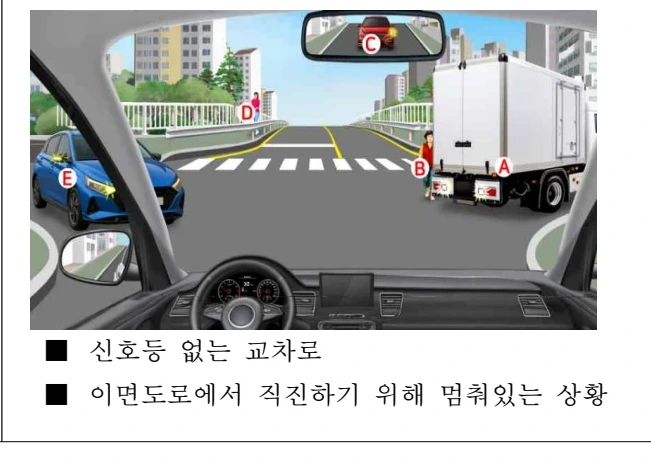

816. 사고발생 가능성이 가장 높은 요인 2가지는?

- ①후진하려는 A화물차
- ②화물차 뒤에서 횡단하는 B보행자
- ③후방에서 진행중인 C차량
- ④보도 통행중인 D보행자
- ⑤좌측에서 우회전하려는 E차량
정답 보기
정답
① 후진하려는 A화물차
② 화물차 뒤에서 횡단하는 B보행자
근거·해설
복잡한 이면도로를 통행하려는 운전자는 차량에 가려진 보행자나 적재물 승하차가 빈번한 택배 및 화물차량 주변 에 위험요인이 없는지 주의를 살필 필요가 있다.